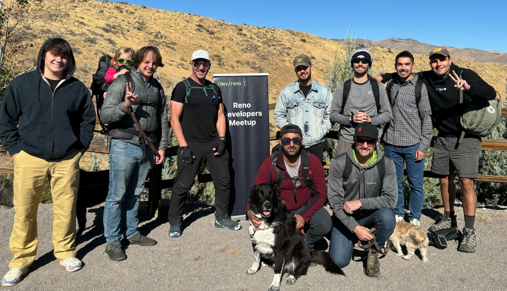

AI Quality Engineering • SDET • Edge AI
Projects
·
Experience
·
Contact
Andrew Nixdorf
AI Quality Engineering • SDET • Edge AI
Problem-solver and master test crafter.
Projects
Experience
Contact
🧪 CHEAT MODE ACTIVATED 🧪
Gamers get extra points!
🏆 Persistence pays off 🏆
Can you find all the Easter eggs?
Nice work tester! 🤖
Try some more commands related to testing...
×
❮

❯